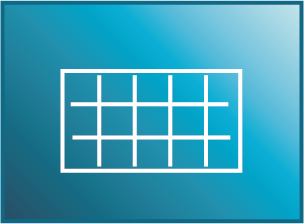
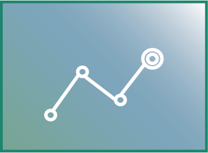

スコアシート(Score Sheets)
SPoLyZerのスコアシートは試合現場に即したスピーディかつシンプルに記入し、デジタル時代に最適なかたちへ進化させました。
スコアの入力方法はたったの2タップ。
シャトルが落ちたコーナーをタップし、落ちた時の球種を選択するだけ。
大事な事はシャトルが落ちたところをタッチ！
コレだけで通常のスコアシートと同じ様に点数が進みます。
単分析(英語: Mono Analytics ?)
スコアシートを記入して試合が終わったら、出現するのがこの画面
「どのコーナーに何点何の球種が決められているか(or決めている)」を瞬時に把握する事が出来ます。
指導者の方はこのグラフをみて選手の弱点を指摘することで、一層説得力が増します。
また、指導者と選手の間で数字で弱点克服への目標や課題を共有することができるので、選手の技術力向上を最大・最速化することができます。
複合分析(英語: Multiplex Analytics ?)
SPoLyZerの分析は単分析だけではありません。 対戦相手や球種、期間等の多角的な分析をすることにより、「自分が具体的に総合的に、対戦相手別にどこが弱点なのか」を把握することができます。 弱点を数値で共有する意味は指導者と選手の間で目標や課題を共有することです。 目指すべきゴールの共有は選手を育成する指導者にとっても、選手自身にとっても建設的で円滑なコミュニケーションによる指導の上で同じ方向性を見据えて練習に取り組むことができます。
動画分析(英語: Video Analytics)
SPoLyZerのスコアシートではラリーの最終球種と場所のみを記録するため、ラリーが決まる(失点or得点)の原因や要因が不明確になってしまいます。
その課題を解決するのが、「動画分析」あらかじめSPoLyZerに試合動画をアップロードするだけで、複合分析のグラフから同じ傾向の弱点(同じ球種で決定したラリー)を１ラリーごとに見ることができます。
同じ傾向の弱点を比較して見るためには試合のビデオを編集しなければならなかったこれまでと比べると分析する手間が省けます！
チーム機能(チームページ)
チームページでは指導者の方は以下の２点が可能になります。
①チームメンバーが行った試合の複合分析(有料版であれば動画分析も)
②チームへの連絡(練習日程や練習試合の連絡、その日の反省まで)
指導者→選手への連絡を円滑に行えることもSPoLyZerの大きな強みになります。
チーム機能(練習試合モード)
日頃のチーム内でのゲーム練習はMyチームがあるから安心。 でも練習試合は日頃練習しないチーム同士の場合がほとんどですよね。 そんな時でも大丈夫です。 練習試合の際は両チームを練習試合専用のグループに招待することで簡単にその日限定のグループが作成できます。 Myチームと違う機能は①一日でグループが消滅②チーム単位でグループへ招待